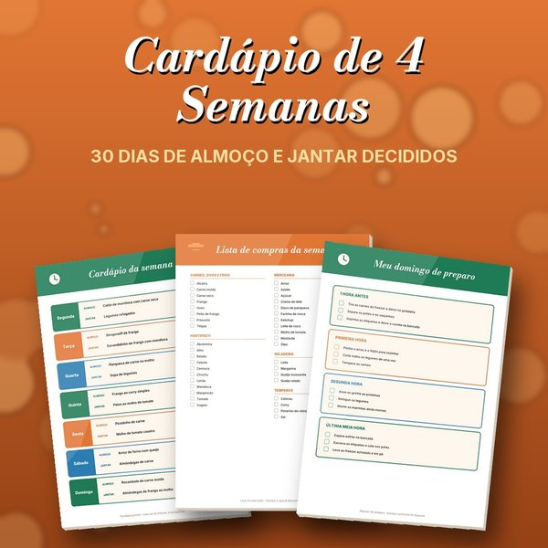

Marmita da Semana
60 receitas que congelam bem, guia do congelamento, as 8 regras de ouro, cardápio da semana, lista de compras e 12 etiquetas. PDF com 38 páginas em A4.
⬇ Baixar o Marmita da SemanaKits extras
Se você levou o Kit Marmita Completo, os três são seus.

Extra
Cardápio de 4 Semanas
30 dias de almoço e jantar, 4 listas de compras, planner de preparo e mapa do freezer. 11 páginas.
⬇ Baixar

Como usar
- 1Imprima em folha A4, em tamanho real (100%). Papel comum serve.
- 2Leia as 8 regras de ouro e o guia do congelamento antes de cozinhar.
- 3Escolha as receitas da semana, leve a lista ao mercado e cozinhe tudo num dia só.
- 4Recorte as etiquetas, escreva a data e cole nos potes antes de ir pro freezer.
- 5Sem impressora? Leve o PDF a uma papelaria ou gráfica.
Uso pessoal. Imprima quantas vezes quiser. Bom apetite!